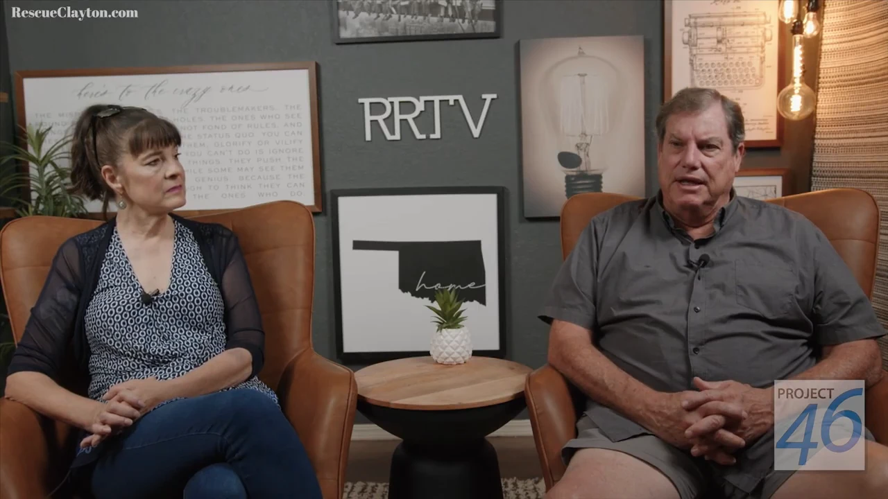
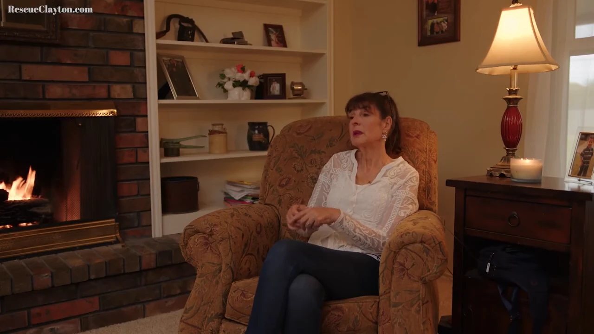
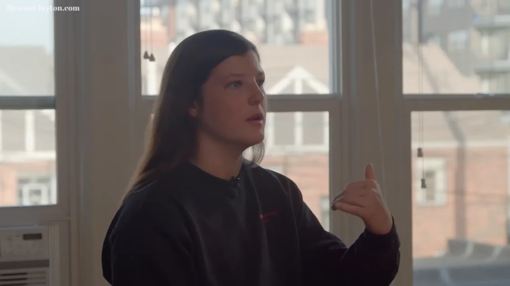
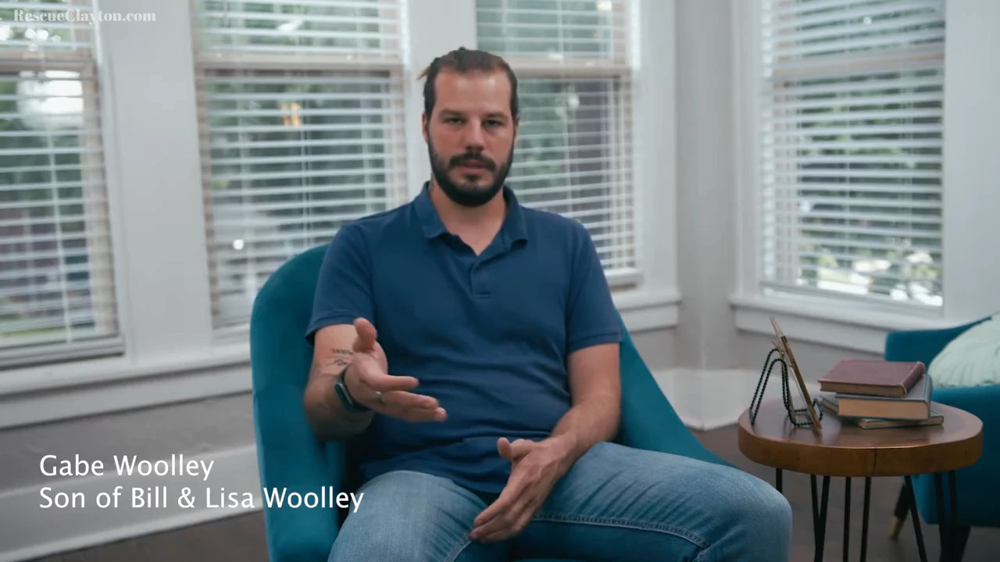
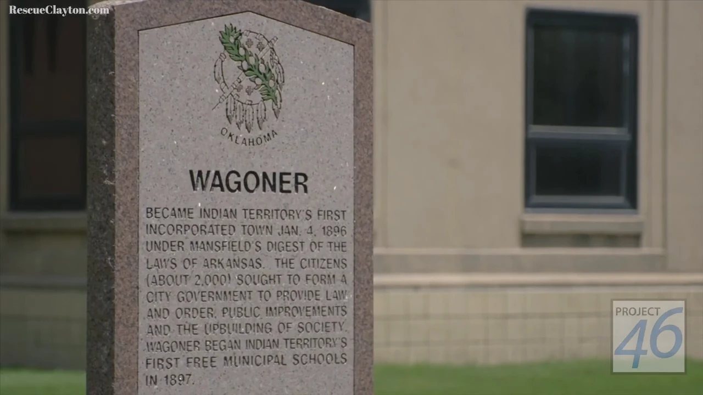

2023 / Award winner
Saving Clayton
An Oklahoma family's grief becomes their fight to be heard.

About the film
After their young grandson Elijah dies, Bill and Lisa Woolley face a criminal investigation and separation from his older brother, Clayton. Saving Clayton follows the family as they recount what happened and challenge the case built against them.
Family interviews, police recordings, a recorded child interview and documents carry the story from the morning of Elijah's death into the years of uncertainty that followed. The film examines the family's account of the investigation while keeping their grief and their effort to reconnect with Clayton at its center.
From the film




Recognition
- Best Feature Documentary, Will Rogers Motion Picture Festival, 2023
- Finalist, Top Film of the Festival, Will Rogers Motion Picture Festival, 2023
- Official Selection, Circle Cinema Film Festival, 2024
Production
RedRiver produced, directed and filmed Saving Clayton in collaboration with Project Forty Six. Miles Rahimi was lead editor.